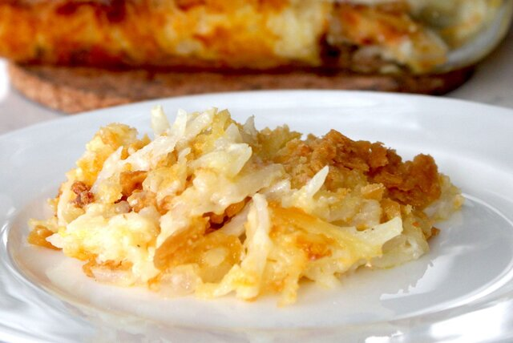

Pachadi

Quick and easy Pachadi
This recipie is from Latika's Book. This is very
light, easy, and delicious pudding kind of dish.
It should be served cool and can be used either as
accompainment or as a dessert.
Ingredients
- Pineapple - 250 grams
- Yougurt plain - 50 grams
- Grated Fresh Coconut - 20 grams
- coconut oil - 10 ml for seasoning
Steps to make Pachadi
- cook pineapple
- Cool down and add yogurt and coconut
- season it with mustard cracked in coconut oil